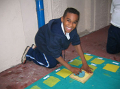
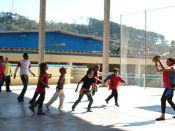
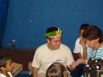
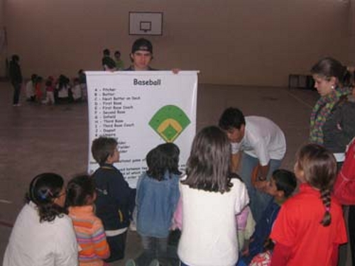

OFICINAS PEDAGÓGICAS
Temática Personalizada
Outra vertente do Projeto é sua realização in loco, utilizando-se do espaço da própria escola, sem a necessidade de transporte. As oficinas oferecidas tem duração de 50 minutos, sendo abordado o tema teórico feito através da leitura do livro paradidático da Editora Moderna e a parte prática realizada através de atividades lúdicas e jogos.
Para cada livro uma oficina diferente!
A leitura pode seguir nosso Calendário Especial de Oficinas:
- Janeiro – Oficinas Culturais e Visitas Monitoradas nas Férias
- Fevereiro – Carnaval Cultural
- Março – Dia da Água
- Abril – Dia do Índio
- Maio – Dia do Artista Pintor
- Junho – Dia do Meio Ambiente
- Julho – Oficinas Culturais e Visitas Monitoradas nas Férias
- Agosto – Dia do Folclore
- Setembro – Dia da Árvore
- Outubro – Jogos e Brincadeiras Tradicionais
- Novembro – Dia da Consciência Negra
- Dezembro – Natal para a Família
Temos outras oficinas culturais e educativas como "Alimentação Saudável", "Esportes de Outros Países", "Oficina de Cartões de Papel Reciclado", "Dia das Mães", "Dia dos Pais", Matroginástica e outros. São mais de 45 oficinas diferentes.



